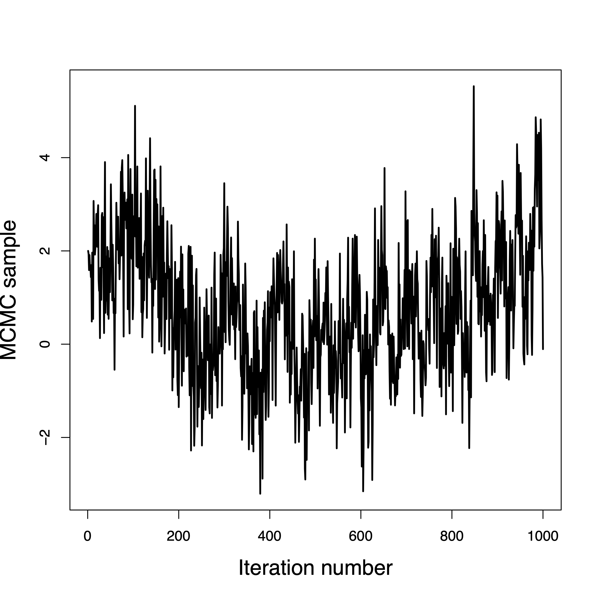

library(rstan)
fit <- readRDS(file = "linear_regression_ppd_fit.rds")
rstan::traceplot(fit, pars = c("beta", "sigma"),
inc_warmup = TRUE)Model checking
Review of last lecture
On Thursday, we learned about
Different types of priors that can be specified
Posterior summaries: point estimates, intervals, and probabilities
Posterior predictive distributions
We learned about the generated quantities code chunk
Today, we will dive into (1) methods for assessing MCMC convergence, and (2) model performance techniques.
Assessing MCMC convergence
Traceplots
Effective sample size (\(n_{eff}\))
MC standard error
\(\hat{R}\)
Sampling issues
Traceplots
The first few MCMC samples are probably not draws from the posterior distribution.
It can take hundreds or even thousands of iterations to move from the initial values to the posterior.
When the sampler reaches the posterior this is called convergence.
Samples before convergence are discarded as burn-in.
After convergence the samples should not converge to a single point!
They should be draws from the posterior, and ideally look like a caterpillar or bar code.
Convergence in a few iterations

Convergence in a few hundred iterations

This one never converged

Convergence is questionable

Traceplots for linear regression

Autocorrelation
Ideally the samples would be independent across iteration.
When using MCMC we are obtaining dependent samples from the posterior.
The autocorrelation function \(\rho(h)\) is the correlation between samples \(h\) iterations apart.
Lower values are better, but if the chains are long enough even large values can be OK.
Highly correlated samples have less information than independent samples.
Autocorrelation for linear regression
stan_ac(fit, pars = c("beta", "sigma"),
separate_chains = TRUE, lags = 25)
Autocorrelation for linear regression
library(bayesplot)
mcmc_acf(fit, regex_pars = c("beta", "sigma"))
Effective sample size
The effective samples size is,
\[n_{eff}=ESS(\theta_i) = \frac{mS}{1 + 2 \sum_{h = 1}^{\infty} \rho (h)},\] where \(m\) is the number of chains, \(S\) is the number of MCMC samples, and \(\rho(h)\) is the \(h\)th order autocorrelation for \(\theta_i\).
The correlated MCMC sample of length \(mS\) has the same information as \(n_{eff}\) independent samples.
Rule of thumb: \(n_{eff}\) should be at least a thousand for all parameters.
Effective sample size for linear regression
print(fit, pars = c("beta", "sigma"))Inference for Stan model: anon_model.
4 chains, each with iter=1000; warmup=500; thin=1;
post-warmup draws per chain=500, total post-warmup draws=2000.
mean se_mean sd 2.5% 25% 50% 75% 97.5% n_eff Rhat
beta[1] -1.48 0 0.16 -1.79 -1.58 -1.48 -1.37 -1.16 2002 1
beta[2] 3.30 0 0.15 3.01 3.19 3.29 3.40 3.59 1980 1
sigma 1.55 0 0.11 1.36 1.47 1.54 1.62 1.78 1909 1
Samples were drawn using NUTS(diag_e) at Fri Nov 22 10:44:51 2024.
For each parameter, n_eff is a crude measure of effective sample size,
and Rhat is the potential scale reduction factor on split chains (at
convergence, Rhat=1).Standard errors of posterior mean estimates
The sample mean from our MCMC draws is a point estimate for the posterior mean.
The standard error (SE) of this estimate can be used as a diagnostic.
Assuming independence, the Monte Carlo standard error is \(\text{MCSE} = \frac{s}{\sqrt{S}},\) where \(s\) is the sample standard deviation and \(S\) is the number of samples.
A more realistic standard error is \(\text{MCSE} = \frac{s}{\sqrt{n_{eff}}}.\)
\(\text{MCSE} \rightarrow 0\) as \(S \rightarrow \infty\), whereas the standard deviation of the posterior draws approaches the standard deviation of the posterior distribution.
Assessing mixing using between- and within-sequence variances
For a scalar parameter, \(\theta\), define the MCMC samples as \(\theta_{ij}\) for chain \(j=1,\ldots,m\) and simulations \(i = 1,\ldots,n\). We can compute the between- and within-sequence variances:
\[\begin{aligned} B &= \frac{n}{m-1}\sum_{j=1}^m \left(\bar{\theta}_{\cdot j} - \bar{\theta}_{\cdot\cdot}\right)^2,\quad \bar{\theta}_{\cdot j} = \frac{1}{n}\sum_{i=1}^n \theta_{ij},\quad\bar{\theta}_{\cdot \cdot} = \frac{1}{m} \sum_{j=1}^m \bar{\theta}_{\cdot j}\\ W &= \frac{1}{m}\sum_{j=1}^m s_j^2,\quad s_j^2=\frac{1}{n-1}\sum_{i=1}^n \left(\theta_{ij} - \bar{\theta}_{\cdot j}\right)^2 \end{aligned}\]
The between-sequence variance, \(B\) contains a factor of \(n\) because it is based on the variance of the within-sequence means, \(\bar{\theta}_{\cdot j}\), each of which is an average of \(n\) values \(\theta_{ij}\).
Convergence metric: \(\widehat{R}\)
Estimate a total variance \(\mathbb{V}(\theta | \mathbf{Y})\) as a weighted mean of \(W\), \(B\) \[\widehat{\text{var}}^+(\theta | \mathbf{Y}) = \frac{n-1}{n}W + \frac{1}{n}B\]
This overestimates marginal posterior variance if starting points are overdispersed.
Given finite \(n\), \(W\) underestimates marginal posterior variance.
Single chains have not yet visited all points in the distribution.
When \(n \rightarrow \infty\), \(\mathbb{E}[W] \rightarrow \mathbb{V}(\theta | \mathbf{Y})\)
As \(\widehat{\text{var}}^+(\theta | \mathbf{Y})\) overestimates and \(W\) underestimates, we can compute
\[\widehat{R} = \sqrt{\frac{\widehat{\text{var}}^+(\theta | \mathbf{Y})}{W}}, \quad \widehat{R} \rightarrow 1 \text{ as }n \rightarrow \infty.\]
\(\widehat{R}\) for linear regression
print(fit, pars = c("beta", "sigma"))Inference for Stan model: anon_model.
4 chains, each with iter=1000; warmup=500; thin=1;
post-warmup draws per chain=500, total post-warmup draws=2000.
mean se_mean sd 2.5% 25% 50% 75% 97.5% n_eff Rhat
beta[1] -1.48 0 0.16 -1.79 -1.58 -1.48 -1.37 -1.16 2002 1
beta[2] 3.30 0 0.15 3.01 3.19 3.29 3.40 3.59 1980 1
sigma 1.55 0 0.11 1.36 1.47 1.54 1.62 1.78 1909 1
Samples were drawn using NUTS(diag_e) at Fri Nov 22 10:44:51 2024.
For each parameter, n_eff is a crude measure of effective sample size,
and Rhat is the potential scale reduction factor on split chains (at
convergence, Rhat=1).A good rule of thumb is to want \(\widehat{R} \leq 1.1\).
What to do if your MCMC does not converge?
Gelman’s Folk Theorem:
When you have computational problems, often there’s a problem with your model.
Source: Andrew Gelman
Sampling issues: slow convergence
Poor chain mixing is usually due to lack of parameter identification.
- A parameter is identified if it has some unique effect on the data generating process that can be separated from the effect of the other parameters.
Solution: use simulated data where you know the true parameter values.
- Informative as to whether the model is sufficient to estimate a parameter’s value.
Sampling issues: divergent iterations
You may get a warning in output from Stan with the number of iterations where the NUTS sampler has terminated prematurely.
Warning messages:
1: There were 62 divergent transitions after warmup. See
https://mc-stan.org/misc/warnings.html#divergent-transitions-after-warmup
2: There were 8 transitions after warmup that exceeded the maximum treedepth. Increase max_treedepth above 10. See
https://mc-stan.org/misc/warnings.html#maximum-treedepth-exceeded Solution: If this warning appears, you can try:
Increase
adapt_delta(double, between 0 and 1, defaults to 0.8).Increase
max_treedepth(integer, positive, defaults to 10).Play with
stepsize(double, positive, defaults to 1).
Sampling issues: divergent iterations
fit <- sampling(stan_model, data = stan_data,
chains = 4, iter = 1000,
control = list(adapt_delta = 0.8,
max_treedepth = 10,
stepsize = 1))See
help(stan)for a full list of options that can be set incontrol.Complete set of recommendations: runtime warnings and convergence problems
If the above doesn’t help change priors then likelihood!
Coding errors
Stan error messages are generally quite informative, however inevitably there are times when it is less clear why code fails.
- One option is to debug by print.
model {
...
print(theta);
}In R this prints (neatly) to the console output.
More details on printing can be found on Stan: print statements
Coding errors
Important: failing a resolution via the above go to http://mc-stan.org/ and do:
Look through manual for a solution.
Look through user forum for previous answers to similar problems.
Ask a question; be clear, and thorough - post as simple a model that replicates the issue.
Outside of this, you have an endless source of resources using Google/stackoverflow/stackexchange/ChatGPT. You can also post to Ed Discussion, go to office hours, and ask in lecture!
What to do when things go wrong: summary
Problems with sampling are almost invariably problems with the underlying model not the sampling algorithm.
Use fake data with all models to test for parameter identification (and that you’ve coded up correctly).
To debug a model that fails read error messages carefully, then try
printstatements.Stan has an active developer and user forum, great documentation, and an extensive answer bank.
Posterior predictive checks
Posterior predictive checks
Last lecture we learned about posterior predictive distributions.
These can be used to check the model fit in our observed data.
The goal is to check how well our model can generate data that matches the observed data.
If our model is “good”, it should be able to generate new observations that resemble the observed data.
To perform the posterior predictive check, we must include the generated quantities code chunk.
Comparing the PPD to the observed data distribution
library(rstan)
library(bayesplot)
Y_in_sample <- extract(fit, pars = "in_sample")$in_sample
ppc_dens_overlay(Y, Y_in_sample)
PPD test statistics
The procedure for carrying out a posterior predictive check requires a test quantity, \(T(\mathbf{Y})\), for our observed data.
Suppose that we have samples from the posterior predictive distribution, \(\mathbf{Y}^{(s)} = \left\{Y_1^{(s)},\ldots,Y_n^{(s)}\right\}\) for \(s = 1,\ldots,S\).
We can compute: \(T\left(\mathbf{Y}^{(s)}\right) = \left\{T\left(Y_1^{(s)}\right),\ldots,\left(Y_n^{(s)}\right)\right\}\)
Our posterior predictive check will then compare the distribution of \(T\left(\mathbf{Y}^{(s)}\right)\) to the value from our observed data, \(T(\mathbf{Y})\).
\(T(\cdot)\) can be any statistics, including mean, median, etc.
When the predictive distribution is not consistent with the observed statistics it indicates poor model fit.
Visualizing posterior predictive check
ppc_stat(Y, Y_in_sample, stat = "mean") # from bayesplot
ppc_stat(Y, Y_in_sample, stat = "sd")
q25 <- function(y) quantile(y, 0.25)
q75 <- function(y) quantile(y, 0.75)
ppc_stat(Y, Y_in_sample, stat = "q25")
ppc_stat(Y, Y_in_sample, stat = "q75")


Posterior predictive p-values
plot <- ppc_stat(Y, Y_in_sample, stat = "median") # from bayesplot
pvalue <- mean(apply(Y_in_sample, 1, median) > median(Y))
plot + yaxis_text() + # just so I can see y-axis values for specifying them in annotate() below, but can remove this if you don't want the useless y-axis values displayed
annotate("text", x = -0.75, y = 150, label = paste("p =", pvalue))
- Bayesian p-value: \(p_B = P\left(T\left(\mathbf{Y}^{(s)}\right) \geq T\left(\mathbf{Y}\right) | \mathbf{Y}\right)\)
Debugging with shinystan
library(shinystan)
my_sso <- launch_shinystan(fit)Prepare for next class
Work on HW 01 which is due before next class
Complete reading to prepare for next Thursday’s lecture
Thursday’s lecture: Model Comparison